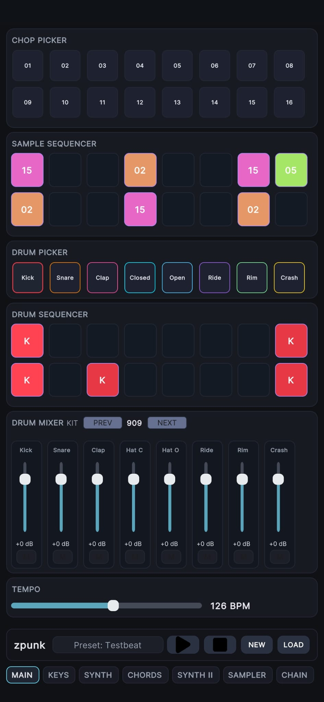
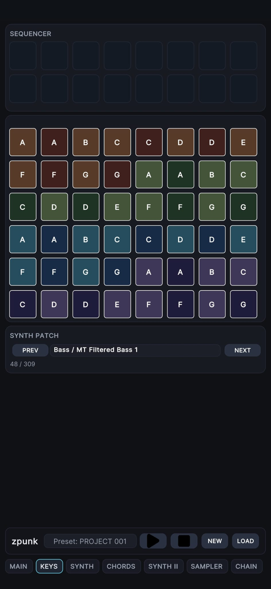
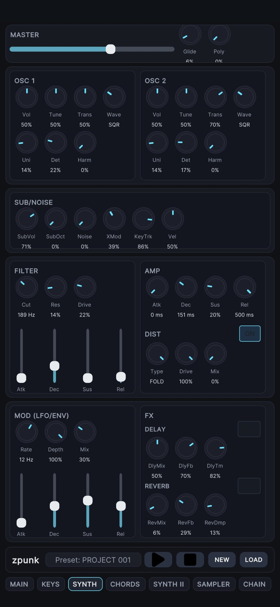
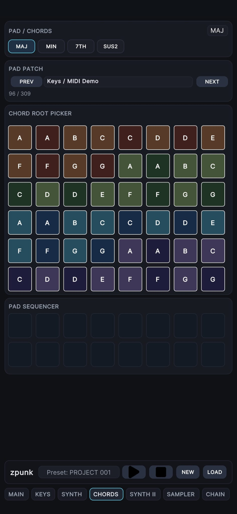
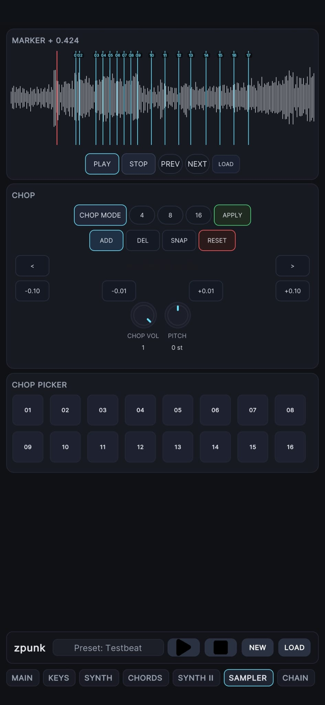
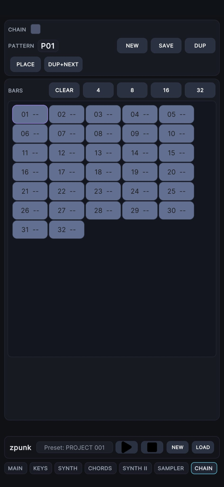

Get unstuck instantly
Long-press STOP on the main page to generate a new beat. zpunk alternates between different groove styles like House and Boom Bap, giving you a fast starting point you can immediately edit.
zpunk is a focused groovebox for making drums, chopped samples, synth parts, chord progressions, and full pattern chains without losing the sketch. Every tab is built around one clear task, so you can move from beat to arrangement fast on a phone.
Built around fast idea generation, better save recall, cleaner synth control, and a more playable touch workflow.

The newest zpunk updates push the app toward faster beat generation, more expressive drums, tighter sample shaping, and more reliable loading so ideas survive from sketch to saved project.
Long-press STOP on the main page to generate a new beat. zpunk alternates between different groove styles like House and Boom Bap, giving you a fast starting point you can immediately edit.
Tap a placed drum step again to cycle its velocity between low, mid, and high. Use this for ghost snares, softer hats, stronger kicks, and more natural accents.
Select a chop, then use the pitch control to push it up or down without leaving the sampler. One source sample can become bass notes, leads, textures, or melodic variations.
Project loading now stops playback before data is restored, helping patterns, chains, synth settings, and sampler state come back in the correct order.
The main tab is the fastest way to begin a track. Drums, sample triggers, chop selection, mixer balance, transport, and tempo stay visible so you can build the core groove without switching screens.
Think of the main tab as the groove sketchpad. Tap in drums, trigger sample chops, adjust levels, and evolve the loop while it plays in real time.
The keys page is where single-note melodies, riffs, and bass patterns get sketched. It pairs a note grid with fast patch browsing so the sound and the notes can evolve together.


The synth page is about direct sound design. Recent work tightened the layout, removed redundant controls, and made patch shaping feel more deliberate on mobile.
Instead of entering one note at a time, the chords page lets each step trigger a full harmony. It is designed to keep progression writing fast, visual, and playable.


The sampler turns one audio source into a playable bank of slices. You can quickly divide a sample, zoom into the waveform, adjust chop boundaries, and sequence the pieces directly into your beat.
Chain view turns short loops into structure. It is built for placing patterns across bars, duplicating ideas forward, and continuing to edit while the arrangement plays.
